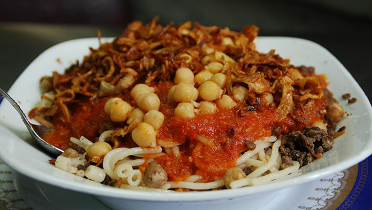

Egyptian koshari

Koshary, kushari or koshari is Egypt's national dish and a widely popular street food. A traditional Egyptian staple, mixing pasta, rice and brown lentils, and topped with a zesty tomato sauce, garlic vinegar and garnished with chickpeas and crispy fried onions. It is often served with sprinklings of garlic juice; garlic vinegar and hot sauce are optional.>
Ingredients:
- Rice
- Brown Lentils
- Onions
- Tomatoes
- Tomato Paste
- Garlic
- White Vinegar
- Crushed Red Pepper
- Spices
- Chickpeas (garbanzo beans)
- Pasta
- Oil
Steps:
-
MAKE THE CHICKPEAS AND FRIED ONIONS:
- Boil the chickpeas with cumin while preparing the fried onions.
- Once the chickpeas are tender, add a squeeze of lime on top.
- Chop the onions into thin circles. Allow the onions tossed in flour to rest for 30 minutes prior to frying.
- Sunflower oil yields the most crispy fried onions. Fry the onions in oil until golden brown, then put them on a paper towel lined plate.
-
MAKE THE FRESH RED SAUCE (OPTIONAL)
- Make the fresh red sauce. Add the bell pepper, tomatoes, onion, garlic cloves, ground cumin, ground coriander, salt, pepper, lime juice, and some oil from the fried onions in a food processor.
- Blend on high. Set aside.
-
MAKE THE KOSHARI LENTIL RICE
- Prepare the koshari lentil rice by blending the peeled onion in the food processor.
- Add some oil to a high-rimmed pot and fry the blended onions for about 15 minutes on medium-low heat.
- Add the soaked brown lentils and water to the cooked onions. Bring to a boil for 5 minutes.
- Turn down the heat to medium-low and add the rice and more water. Add salt and pepper and mix the rice. Cover and cook for about 12 minutes. Remove from the heat and keep the rice covered.
-
MAKE THE PASTA AND KOSHARI RED VINEGAR SAUCE
- Blend the tomatoes in a blender. Pour the pureed tomatoes into a strainer.
- Use a spoon to press the blended tomatoes through the strainer.
- In a medium saucepan on high heat, add some oil and fry the red pepper flakes (or cayenne pepper) and minced garlic for about 1 minute. Add the tomato paste and white vinegar for about 30 seconds.
- Add the strained tomatoes. Stir in the ground cumin, ground coriander, salt, sugar, and ground pepper.
- Boil on medium-high heat for about 10 minutes. Add a chili pepper if desired.
- Assemble your koshari bowl!